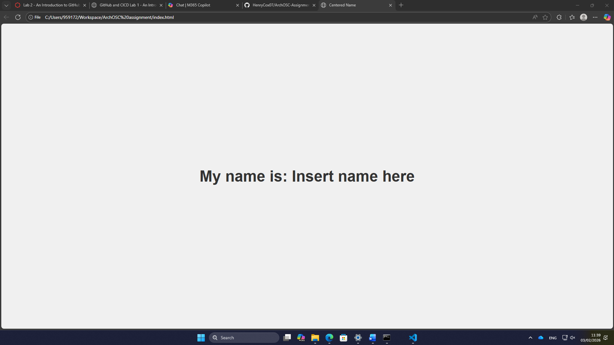
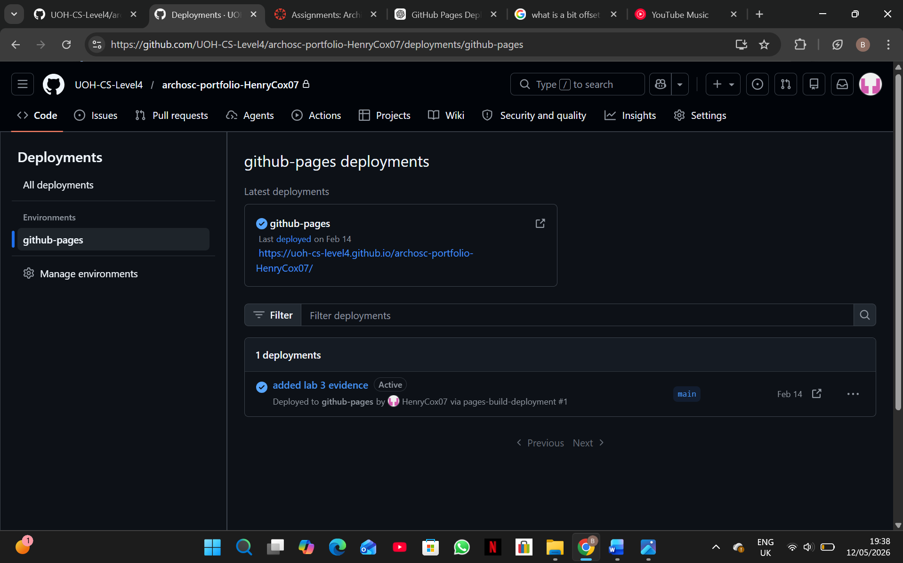

Lab 2
Task 1:
To complete the first set of tasks I made a new local repository called ArchOSC assignment with the photos folder added into it. After that, I created a new document called lab 2 placeholder which was then saved into the local repository. Once the word doc was saved into the local repository, I took a screenshot of the repos contents which was then pasted into the Word doc.

Task 2:
For the second task I had to initialise a new repo in the ArchOSC assignment folder. The way that I did this was by opening the command line inside the ArchOSC assignment folder. Then once I had the command line open in the correct folder, I had to type git init into the command line. This initialised an empty git repository in the folder.

Task 3:
For the 3rd task I had to produce a repo on GitHub that my local repo can link to. To produce this I went onto GitHub and selected the new repo button; this took me to an options screen. I made the repo private and included a README.md file as well as a Visual Studio .gitignore file. All I needed to do at this point was select myself as the repo owner and I had a new repo.

Task 4:
For this task I had to link both my local and online repo together and then pull the contents from my repo on GitHub onto the local repo. The way I achieved this is by using the command git remote add origin and then pasted the link to my online repo into the command. By using this command, I told the local repo where it should be looking if it is pulling or pushing information and then to add the contents of my repo on GitHub to my local repo I used git pull origin main.

Task 5:
The fifth task required me to produce a website and save it into my local repo. To start I opened a new text file in Visual Studio Code; once I made the text file, I copied the code I was provided into it. Once the code had been pasted into the file, I saved the file into my local repo and called it index.html.

Task 6:
For task 6 I had to commit all my files to my local repository; the way I did this was using git status to check what files were in my local folder, then using git add . to add all the files from the folder to the local repo and then using git commit to save all the files onto the local repository.

Task 7:
For this next task I had to push my committed files in my local repo to my repo on GitHub. To do this I used Git status to check if any files needed committing, I used the command git push and was then prompted to type the command git push --set-upstream origin main.

Task 8:
For the first set of changes I went into the source code and altered the text in the body h1 from insert name here to my name. For the second change to the website, I altered the colour of the page in the source code from white to blue.

-colour-change.png)
Task 9:
For this task I had to deploy the website onto GitHub by enabling GitHub Pages and directing the deployment to my main branch.

Reflection:
Overall, Lab 2 taught me the essentials of GitHub such as making local and online repo, how to link repos together so that I could work outside of the labs and how to use the developer command prompt to easily push, pull and commit changes between my local and online repos which provided me with consistent backups if any work was lost. Furthermore, I began producing my website which required me to start learning how to develop websites in Visual Studio code. Finally, I learnt how to use GitHub pages which allowed me to access my website via GitHub at any time rather than having to open the files manually on a machine.